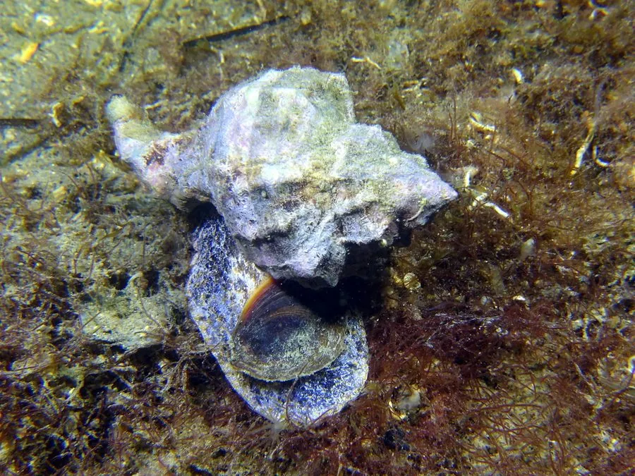

软体动物 · 动物界
染色骨螺 Hexaplex trunculus

古代地中海著名的紫色染料来源，贝壳上长着层层叠叠的棘刺，一只螺只能挤出几滴珍贵的紫色黏液，曾价比黄金。
- 分类
- 门软体动物门纲腹足纲目新腹足目科骨螺科属六肋骨螺属
- 栖息环境
- 地中海与大西洋东岸的岩礁、石砾底质，潮间带至水深数十米
- 地理分布
- 东大西洋和地中海，从葡萄牙、摩洛哥至意大利、希腊和突尼斯沿岸
- 保护级别
- 尚无专门保护级别；历史上因采紫染料被大量捕捞
物种志
染色骨螺的贝壳呈纺锤形，壳高约六至十厘米，螺层分明，每一层都长着短而钝的棘刺和纵肿肋，壳面粗糙，呈灰白或浅褐色，壳口卵圆形，边缘有齿状突起，口盖角质。它的足部肌肉发达，能牢牢附着在岩石上。最特别的是它的鳃下腺，能分泌一种无色的黏液，接触空气和阳光后逐渐变成紫色，古代腓尼基人正是用它染出了著名的推罗紫。
它分布于东大西洋和地中海，从葡萄牙、西班牙、摩洛哥沿岸到意大利、希腊和突尼斯，栖息在潮间带至水深数十米的岩礁和石砾底质，常藏在石缝和藻类之间。它是肉食性螺类，靠钻穿双壳类和藤壶的壳取食，也吃死鱼和腐肉。繁殖期在春季至夏季，雌体产下卵鞘，卵鞘聚集成团附着在岩石上。由于古代长期大量采集，地中海部分地区的种群曾明显减少，如今它仍被捕来做诱饵和观赏贝壳，尚无专门的保护级别。
形态与习性
- 食性钻穿双壳类和藤壶取食，也吃腐肉
- 壳高约六至十厘米，壳面有棘刺和纵肿肋
- 染料鳃下腺分泌黏液，曝光后变成紫色
- 栖息深度潮间带至水深数十米的岩礁和石砾底质
- 繁殖春夏产卵鞘，卵鞘成团附着于岩石
- 历史腓尼基人用它染出著名的推罗紫
趣味知识
- 一只染色骨螺只能挤出几滴染液，染一件长袍往往需要成千上万只螺。
- 它分泌的黏液本身无色，接触空气和阳光后才会慢慢变成紫色。
- 推罗紫曾是罗马帝国皇室专用色，这种螺也因此被长期大量捕捞。